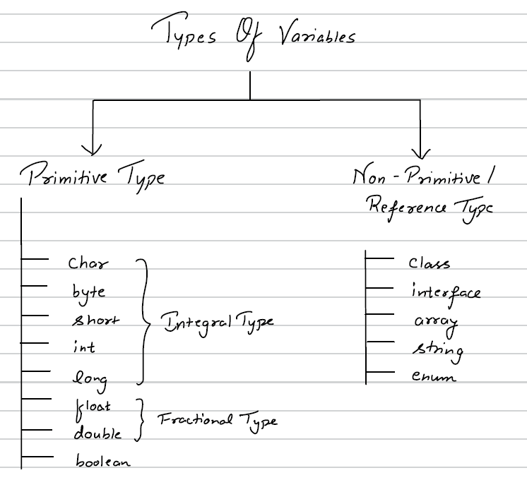
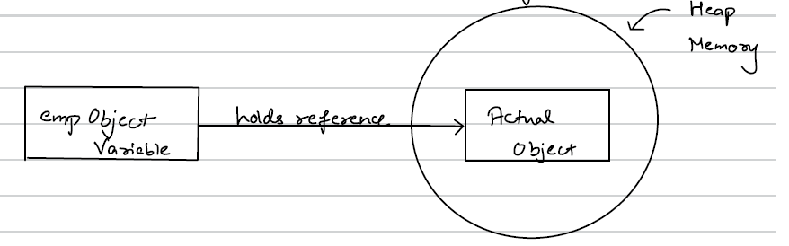
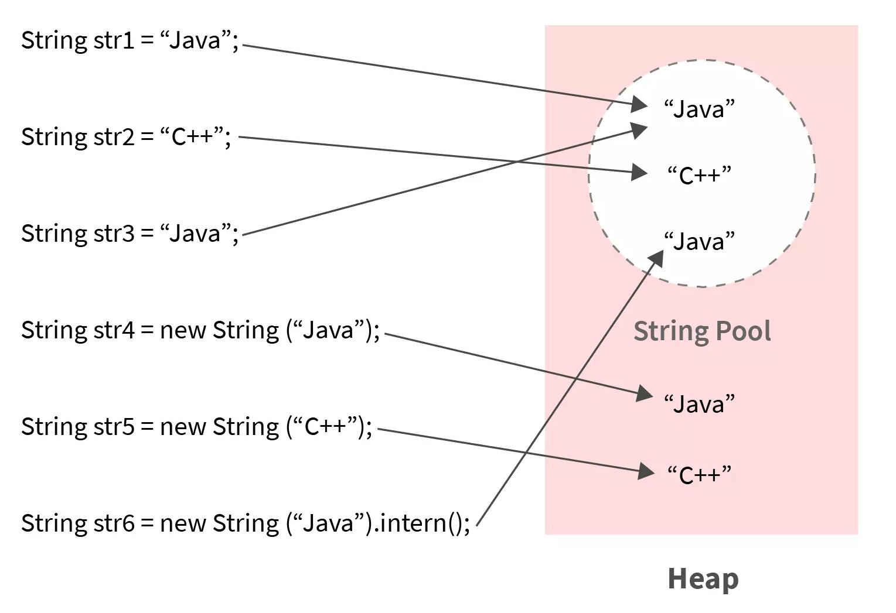

Variables & Data Types
What is a variable ?
- It is a container which holds a value
- How to declare ?
Datatype Variable_Name = value;
Eg : int i = 1;
boolean bool = true ; - Java is Static typed language i.e. we mandatorily have do define the datatype of a variable.
- Java is a Strongly Typed Language i.e there is a restriction on what value can be assigned to a variable.
Types of variables

Java Primitive Data Types
| Type | Size (bits) | Range | Default Value |
|---|---|---|---|
| byte | 8 | -128 to 127 | 0 |
| short | 16 | -32,768 to 32,767 | 0 |
| int | 32 | -2^31 to 2^31 - 1 (-2,147,483,648 to 2,147,483,647) | 0 |
| long | 64 | -2^63 to 2^63 - 1 | 0L |
| float | 32 | ±1.4E-45 to ±3.4028235E38 | 0.0f |
| double | 64 | ±4.9E-324 to ±1.7976931348623157E308 | 0.0d |
| char | 16 | 0 to 65,535 (Unicode characters) | '\u0000' |
| boolean | JVM dependent (typically 1 bit internally) | true / false | false |
Important Points
- Default values apply only to instance variables, not local variables.
charstores Unicode characters (0 to 65535).booleansize is not precisely defined by JVM spec.floatrequiresfsuffix.longrequiresLsuffix if value exceeds int range.
2's Complement in Java
Two’s complement is a method to represent negative numbers in binary.
Steps to Find 2’s Complement
- Convert number to binary
- Invert all bits (1’s complement)
- Add 1
Example: Represent -5 (8-bit)
5 = 00000101
1’s complement: 11111010
Add 1: 11111011
So, -5 = 11111011
Key Points
- MSB (Most Significant Bit) represents sign (0 = positive, 1 = negative)
- int range = -2^31 to 2^31 - 1
- Only one representation of zero
Types of Type Conversion in Java

1. Widening (Implicit Conversion)
Smaller → Larger data type. Done automatically. No data loss.
Example:
int a = 10;
double b = a; // int → double (automatic)
System.out.println(b); // 10.0Flow: byte → short → int → long → float → double
2. Narrowing (Explicit Conversion)
Larger → Smaller data type. Manual casting required. May cause data loss.
Syntax:(target_type) value
Example:
double x = 10.75;
int y = (int) x;
System.out.println(y); // 10 => Decimal part is lost.3. Type Promotion in Expressions
Java automatically promotes smaller types:
byte, short, char → intExample:
byte a = 10;
byte b = 20;
int c = a + b; // result is int🧠 Important Rules
- boolean cannot be converted to any other type
- Cannot convert object types like primitives
- Arithmetic operations auto-promote to int
Kinds of Variables in Java
1️⃣ Instance (Member) Variables
- Declared inside a class but outside methods
- Each object gets its own copy
class Student {
String name; // instance variable
int age; // instance variable
}Student s1 = new Student();
Student s2 = new Student();Memory:
- s1.name → separate
- s2.name → separate
🧠 Key Points
- Stored in Heap memory
- Created when object is created
- Destroyed when object is destroyed
- Gets default values
- Accessed using object reference
2️⃣ Static Variables (Class Variables)
- Declared using static keyword
- Only ONE copy shared among all objects
class Student {
static String schoolName = "ABC School";
}Student.schoolName = "XYZ School"; // static variable can be accessed and modified without creating an instance of the classMemory:
- Only one copy
- Shared by all objects
🧠 Key Points
- Stored in Method Area (Metaspace in modern JVM)
- Created when class is loaded
- Shared among all objects
- Gets default values
- Access using: ClassName.variable
3️⃣ Local Variables
- Declared inside a method, constructor, or block
class Test {
void display() {
int x = 10; // local variable
}
}🧠 Key Points
- Stored in Stack memory
- Created when method is called
- Destroyed when method ends
- ❌ No default value (must initialize)
- Cannot use access modifiers
Pass by Value vs Pass by Reference in Java
🚨 Important Truth
- Java is 100% Pass by Value.
- There is NO pass by reference in Java.
🧠 What Does “Pass by Value” Mean?
- When a method is called, A copy of the variable is passed
- Changes inside method don't affect original variable (for primitives)
1️⃣ Primitive Types
class Test {
static void change(int x) {
x = 100;
}
public static void main(String[] args) {
int a = 10;
change(a);
System.out.println(a); // prints 10
}
}Why?
- a is copied into x
- Changing x doesn’t change a
2️⃣ Objects (Where Confusion Happens)
class Student {
String name;
}
class Test {
static void change(Student s) {
s.name = "Rahul";
}
public static void main(String[] args) {
Student st = new Student();
st.name = "Abhi";
change(st);
System.out.println(st.name); // Prints Rahul
}
}Why Did It Change? Because:
ststores a reference- That reference is copied
- Both references point to the same object
- Modifying object affects original
- But reference itself is still passed by value.
Reference Data Types (Non-Primitive Date Types)
There are mainly 4 type of renference data types :
- Class
- String
- Interface
- Array
What is reference ?
Let's understand with an example of class So Let's create a class -
public class Employee {
private int id;
public int getId() {
return id;
}
public void setId(int id) {
this.id = id;
}
}Now to create an object of class Employee
public class Main {
public static void main(String[] args) {
Employee employee = new Employee();
}
}New keyword allocates a memory block object and the variable's name holds a reference to actual memory.

String Reference Data Type in Java
🧠 What is String?
String s = "Hello";Here:
String → Class (from java.lang)
s → Reference variable
"Hello" → Object
🔥 Where Strings Are Stored?
1️⃣ String Literal (Stored in String Pool)
String s1 = "Java";
String s2 = "Java";- Only ONE object created in String pool.
- Both references point to same object.

2️⃣ Using new Keyword (Stored in Heap)
String s3 = new String("Java");- Creates a NEW object
- Does not reuse pool object
🧪 Comparison Example
String s1 = "Java";
String s2 = "Java";
String s3 = new String("Java");
System.out.println(s1 == s2); // true
System.out.println(s1 == s3); // false
System.out.println(s1.equals(s3)); // true🧠 Important: String is Immutable
String s = "Java";
s.concat(" Backend");
System.out.println(s); // Java
s = s.concat(" Backend");
System.out.println(s); // Java BackendWhy?
- Strings cannot be modified
- concat() creates new object
- Original remains unchanged
🧠 equals() vs ==
String a = "Java";
String b = new String("Java");
a == b // false
a.equals(b) // true- == → reference comparison
- equals() → content comparison
🧩 Internal Structure (Simplified)
public final class String {
private final byte[] value;
}- final class
- internal array is final
- immutable design
Interface Reference Data Type in Java
An interface can be used as a reference type to refer to an object of a class that implements it.
🧠 Basic Idea
interface Animal {
void sound();
}
class Dog implements Animal {
public void sound() {
System.out.println("Dog barks");
}
}Now
Animal a = new Dog();
a.sound(); // Dog barksHere:
- Animal → Interface (reference type)
- a → Interface reference variable
- new Dog() → Object
- Dog implements Animal
📌 Important Rules
1️⃣ Interface cannot be instantiated
2️⃣ Interface reference can only access Methods declared in interface
Animal a = new Dog();
a.sound(); // OK
a.run(); // ❌ if run() not in Animal🧠 Very Important Concept
- Reference type determines what methods are accessible.
- Object type determines which method implementation runs.
Array as Reference Data Type in Java
- Array is a reference data type.
- Array is an object stored in heap memory.
- Reference variable is stored in stack.
- Arrays are mutable.
- Arrays have fixed size.
int[] arr = new int[3];Class as Reference Data Type in Java
- A class is a blueprint for creating objects.
- Objects are stored in heap memory.
- Reference variable stores address of object.
- Multiple references can point to same object.
Example:
Student s1 = new Student();Memory: s1 → Student object in heap
Wrapper Classes
- Wrapper classes are object representations of primitive data types.
- Primitive → Wrapper Mapping
| Primitive Type | Wrapper Class | Size (bits) | Default Value (Primitive) | Default Value (Wrapper) |
|---|---|---|---|---|
| byte | Byte | 8 | 0 | null |
| short | Short | 16 | 0 | null |
| int | Integer | 32 | 0 | null |
| long | Long | 64 | 0L | null |
| float | Float | 32 | 0.0f | null |
| double | Double | 64 | 0.0d | null |
| char | Character | 16 | '\u0000' | null |
| boolean | Boolean | 1* | false | null |
- All wrapper classes are in: ``
java.lang package`` - Wrapper Objects Are Immutable
📌 Why Do We Need Wrapper Classes?
Primitives are:
- Not objects
- Cannot be used in Collections
- Cannot call methods
- Cannot be null. But many Java features require objects.
📌 What is Boxing?
🔹 Manual Boxing (Before Java 5)
Converting primitive → wrapper manually:
int a = 10;
Integer obj = new Integer(a); // old way (deprecated)Better way:
Integer obj = Integer.valueOf(a);📌 What is Autoboxing?
Automatic conversion of primitive → wrapper
int a = 10;
Integer obj = a; // AutoboxingCompiler converts it to:
Integer obj = Integer.valueOf(a);📌 What is Unboxing?
Automatic conversion of wrapper → primitive
Integer obj = 20;
int a = obj; // UnboxingCompiler converts it to:
int a = obj.intValue();🧠 Real Example (Collections)
ArrayList<Integer> list = new ArrayList<>();
list.add(10); // autoboxing
int x = list.get(0); // unboxingInteger Caching (Very Important Interview Question)
Integer a = 100;
Integer b = 100;
System.out.println(a == b); // true -> both point to the SAME cached objectWhy? Because Java caches values from: -128 to 127
But:
Integer a = 200;
Integer b = 200;
System.out.println(a == b); // falseBecause outside cache range.
Constant Variable
- We cannot change the value of a constant variable. This is usually created using final keyword.
static final int VAR = 10;static => It means only one copy exists.
final => It means value of var can't be changed.